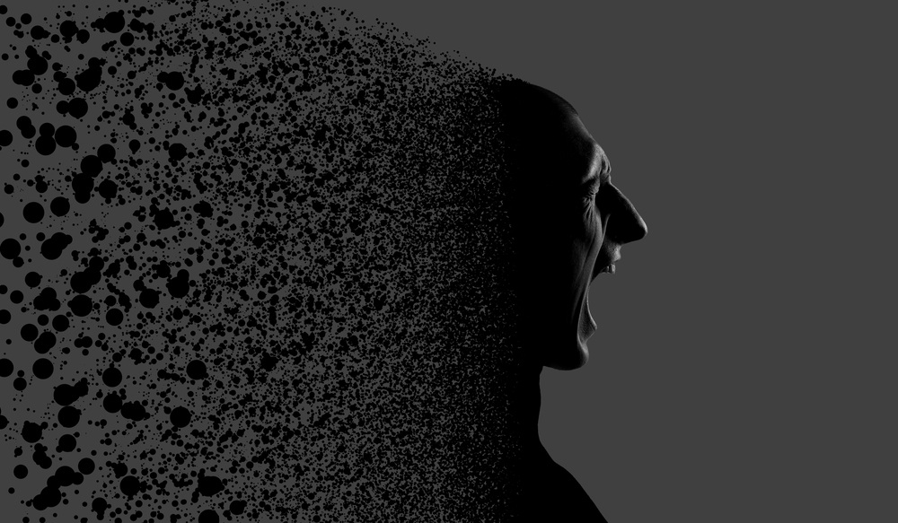

Психология страха

Страх заставляет людей размышлять.
-Аристотель, древнегреческий философ
Страх – это чувство, через которое в своей жизни неоднократно проходил каждый человек. Все люди, всех возрастов и национальностей, когда-либо испытывали страхи. Страх может убить, а может и спасти. Страх может помочь, а может и привести в отчаяние. Что такое страх с точки зрения психологии?
Если говорить в общем, то умеренный страх – естественная реакция человека на всякую реальную или воображаемую ситуацию, которая угрожает ценностям этого человека. Этой ценностью могут быть здоровье, физическая целостность, может быть идея, может быть представление о себе, дети, комфорт и.т.п.
В этой статье попытаемся ответить на основные вопросы, касающиеся данной темы.
Что лежит в основе страха? Откуда он появляется?
Чувство страха – это производная неизвестности: когда мы чего-то не знаем или не можем хотя бы частично предугадать, незнание и неопределенность нас сильно пугают, и это вполне естественно – ведь за неизвестностью может скрываться опасность, которая может угрожать ценностям. Поэтому нормальный, умеренный страх, несмотря на все неприятные ощущения, которые он доставляет, является необходимым чувством. Это совершенно нормальная, закономерная реакция на опасность, угрозу (воображаемую или настоящую), которая поддерживается в нас очень сильным инстинктом – инстинктом самосохранения.
А давайте подробнее поговорим о неизвестности, которая лежит в основе страха.
Как я уже сказал, именно неизвестность нас пугает. Это было известно еще в античные времена. Например, до нас дошла мысль выдающегося философа Аристотеля, который утверждал, что «страх определяют как ожидание зла». Замечу, что ключевое слово здесь – ОЖИДАНИЕ. То есть другими словами – неизвестность. Об этом же говорил и великий христианский святой, преподобный Иоанн Лествичник, который писал, что «страх есть предвоображаемая беда; или иначе, страх есть трепетное чувство сердца, тревожимое и сетующее от представления неведомых злоключений». О том же писал известный философ Джон Локк: «Страх есть беспокойство души при мысли о будущем зле, которое, вероятно, на нас обрушится». Для того, чтобы нормально и полноценно жить, нам необходимо в некоторой степени представлять, что нас ждет в будущем, мы должны быть готовы к разного рода неприятностям, знать, как их преодолевать. Если же у нас нет этого более или менее ясного видения ситуации, если ситуация резко меняется, и мы не знаем, что дальше будет, или если мы не знаем, как реагировать на некий раздражитель, то возникает страх. Он легко возникает в ситуации нехватки информации. Поэтому в целом можно утверждать, что известность, предсказуемость, точный прогноз, анализ ситуации, гибкое мышление освобождают нас от страхов; чем лучше мы ориентируемся в ситуации, тем меньше у нас страхов.
А почему мы так боимся некоторых людей?
Мы боимся только тех, от кого не знаем, чего ожидать. Посмотрите: нам иногда страшно подойти и попросить что-то у неизвестного человека – потому, что мы НЕ ЗНАЕМ, что он нам скажет (если бы мы знали, то страха бы не было). А вот у знакомого, предсказуемого человека, чьи реакции нам известны, нам спрашивать не страшно.
А почему так страшно делать выбор, принимать решения?
Нам страшно принимать решения, потому что мы НЕ УВЕРЕНЫ, что они правильные (если бы были уверены, то страха не было). Нам страшно жить – потому что мы НЕ ЗНАЕМ, как жить, будущее нас пугает НЕИЗВЕСТНОСТЬЮ (если бы знали, то страха бы не было), нам страшно, когда кто-то НЕИЗВЕСТНЫЙ НЕОЖИДАННО выскочил из-за угла (если человек нам известный и мы ожидаем от него некие действия, то страха не будет).
Перейдем к главному вопросу: как же бороться со страхами? Что об этом говорит современная психология?
Надо сказать, что современная психология, к сожалению, предлагает немногое. Разные школы выдвигают различные теории борьбы со страхами, начиная от анализа прошлого и заканчивая различными поведенческими методиками. Иногда они дают временный результат, но чаще результата нет, даже временного. Я думаю, что это обусловлено тем, что неверно определяется природа страха.
 Из общих рекомендаций наиболее эффективными являются следующие:
пока страх не достиг значительной интенсивности и не перешел в панику, надо избавляться от неизвестности, важнейшей причины страха – то есть расширять собственные знания (мы уже говорили об их необходимости), надо учиться расставлять приоритеты, надо обдумывать проблему со всех сторон, анализировать ее.
Кроме того, необходимо переступить через те установки и принципы, которые в результате анализа ситуации окажутся неверными. Очень важно отказаться от своего образа, и, отбросив гордость, составить реальное мнение о себе, своих достоинствах и недостатках, о взаимоотношениях с людьми, перспективах и.т.п.
Из общих рекомендаций наиболее эффективными являются следующие:
пока страх не достиг значительной интенсивности и не перешел в панику, надо избавляться от неизвестности, важнейшей причины страха – то есть расширять собственные знания (мы уже говорили об их необходимости), надо учиться расставлять приоритеты, надо обдумывать проблему со всех сторон, анализировать ее.
Кроме того, необходимо переступить через те установки и принципы, которые в результате анализа ситуации окажутся неверными. Очень важно отказаться от своего образа, и, отбросив гордость, составить реальное мнение о себе, своих достоинствах и недостатках, о взаимоотношениях с людьми, перспективах и.т.п.
И в конце концов, надо, пересилив собственную гордость, попросить помощи. Если ты не просишь помощи, то как можно залезть тебе в голову и, выяснив твои проблемы, оказать помощь?
Кроме того, в настоящее время достаточно эффективны во многих случаях фармакологические методы лечения. Не нужно отрицать пользу, которую может принести психиатр. Если у человека не получается преодолеть свой страх, используя для этого психологические методы лечения, то необходимо обратиться к фармакологии. В том случае, если страх удается купировать, у пациента появляется время на осмысление ситуации. Если страх не остановить и позволить ему развиваться, человек может впасть в тяжелое состояние паники, когда он уже не сможет себя контролировать. Не нужно дожидаться этого состояния! Лучше прибегнуть к каким-либо действенным препаратам, которые доказали свою эффективность и которые могут улучшить состояние. К сожалению, сама причина страхов фармакотерапией не лечится, но симптомы во многих случаях снимает успешно. НО! Подчеркну, что лекарства должен назначать врач-психиатр! Самолечение в данном случае абсолютно недопустимо!


{kind=link}